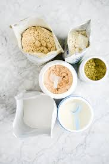

Serial No. |
Image |
Facts |
1 |
 |
Protein supplements are one of the most popular dietary supplements used by athletes, recreationally active adults, and soldiers striving to increase muscle mass, improve exercise recovery, and improve performance (McLellan, Pasiakos, & Lieberman, 2014). The global sports nutrition market was worth US$20.7 billion in 2012, and is expected to rise to US$37.7 billion by 2019 (Persistence Market Research, 2017) indicating a growing, financially lucrative business sector.
|
2 |
|
Resistance and endurance exercise can induce a net negative protein balance and, if the body is lacking sufficient levels of amino acids (AAs), both pre- and postexercise, muscle wasting and delayed exercise recovery can occur (Wilborn et al., 2013). When protein intake is too low, maximal strength and lean mass gains cannot be achieved, even with maintenance of a positive nitrogen balance (Tarnopolsky et al., 1992). Therefore, many people, and in particular athletes, consume protein supplements to meet the additional demands from training and/or competition. A higher protein intake is advantageous for muscle and strength development and, therefore, bodybuilders and other strength athletes widely use protein supplements to achieve high protein intakes (up to three times the recommended daily allowance; Cribb, Williams, Carey, & Hayes, 2006)
|
3 |
|
Whey protein (WP) is a high-quality protein which contains a higher concentration of essential amino acids (EAAs) than other protein sources, is rapidly digested, absorbed, and utilized (Bawa, 2007), and increases blood AA concentrations and stimulates muscle protein synthesis (MPS; for up to 2 hours) compared to an equivalent or larger dose of casein (Cribb et al., 2006).
|
4 |
 |
This chapter will initially examine key attributes which make WP a “high-quality” protein within sport and exercise settings. Resistance exercise (weight training, body building) and cardiorespiratory endurance training are markedly different and may benefit from WP supplementation for several distinct reasons. Furthermore, consuming WP before, during, or after exercise—with or without other bioactives—may confer distinct advantages to exercisers. Therefore, the effect of WP intake for different sports and activities, as well as timing of ingestion, and issues relating to dosage and coingestion with other ingredients, will also be examined. It is not only trained athletes who may benefit from WP supplementation, and so the potential benefits in different user groups will also be explored. Mechanisms by which WP ingestion may enhance sports performance—of which there are several—will be discussed, as well as potential contraindications of supplementation. Finally, a brief discussion on limitations of current research and suggestions for future study will be given.
|